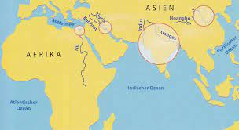

In einigen Teilen Nordafrikas und Asiens entwickelten sich die Kultur rascher als in den anderen Gebieten der Welt.

Die großen Strömen Nil, Euphrat, Tigris, Indus, Ganges und Hoangho hatten immer viel Wasser.
Zu bestimmten Zeit gab es Hochwasser. Dieses Hochwasser überschwemmte das umliegende Land.
Die an diesen großen Flüsse entstanden Kulturen nennt man Hochkulturen.